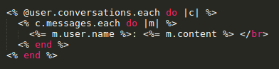

Chat
Koodaamme kahden käyttäjän välisen viestien lähetys- ja lukemistoiminnon. Aloitamme pohtimalla, miten tämän toiminnallisuuden voi mallintaa ja miten se liittyy muuhun ohjelmaan (models). Tämän jälkeen luomme käyttöliittymän (views) ja toiminnallisuuden (controllers) chattia varten.
Täytyy siis koodata mahdollisuudet siihen, että
1) Käyttäjä voi kuulua useampaan keskusteluun ja keskustelulla voi olla kaksi käyttäjää
2) Keskusteluun kuuluu monta viestiä, mutta yksi viesti voi kuulua vain yhteen keskusteluun.
Luodaan mallit Conversation ja Message sekä yhteydet
Luodaan ensin scaffoldaamalla Conversation.
rails g scaffold Conversation
Aja migraatiot
Keskustelukysymykset: Millä komennolla ajat migraatiot? Mitä sen jälkeen kannattaa alkaa tekemään?
Luodaan yhteys käyttäjän ja Conversationin välille
Lue
tutoriaali Eli siis, ensimmäinen askel on lisätä app/models/user.rb-tiedostoon
has_and_belongs_to_many :conversations
Sen jälkeen app/models/conversation.rb -tiedostoon
has_and_belongs_to_many :users
Tämä ei vielä riitä. Rails on siitä hyvä että voimme tehdä paljon asioita ymmärtämättä tietokantatauluista erityisemmin. Nyt kyllä pitäisi ymmärtää mitä olemme seuraavaksi tekemässä. Haluamme luoda seuraavanlaisen tietokantataulun
ConversationUsers
| user_id | conversation_id |
|---|
| 1 | 1 |
| 2 | 1 |
| 1 | 2 |
| 3 | 2 |
komennolla
rails g migration CreateConversationsUsers conversation_id:integer user_id:integer
ConversationsUsers on taulu, joka yhdistää Conversationit ja Userit. Jokaisella Conversationilla ja Userilla on oma yksilöllinen numero-ID.
Keskustelukysymys: Mitä kuva esittää?
Tehdään käyttäjäsivulle viestinlähetysmahdollisuus
Otetaan ensin käyttöön AngularJS. Angularia käytetään näkymien ja POST-HTTP-kutsujen lähetykseen. Se on JavaScript-pohjainen. Lisätään app/layouts/application.html.erbiin eli tiedostoon joka ladataan kaikkia muita viewejä näytettäessä script-tagien (script-tageista esimerkki
täällä) sisään, tiedoston head-osioon linkki
https://cdnjs.cloudflare.com/ajax/libs/angular.js/1.3.13/angular.min.js
Keskustelukysymys: Mitä tämä tekee?
Kun olet sisäistänyt täydellisesti mitä linkin koodi tekee, ota se users/show.html.erb-viewin pohjaksi. Vaihda rivien 18 ja 24 user_id receiver_id:ksi. Luodaan seuraavaksi Message-malli ja koodataan MessagesControlleriin pyynnön käsittelevä funktio.
Pyynnön käsittelevä funktio MessagesControlleriin
Luodaan Message-malli komennolla
rails g scaffold Message user_id:integer conversation_id:integer content:string receiver_id:integer
Lisätään message.rb -modeliin
belongs_to :user
belongs_to :conversation
ja user.rb ja conversation.rb- modeliin
has_many :messages
Määritellään routes.rb-tiedostoon reitti
post 'send_message_for_user', to: 'messages#send_message_for_user'
Keskustelukysymys: Mitä send_message_for_user -funktion sisällöksi tulee? Miten debuggaat koodia ongelmien ilmetessä tätä tehdessä?
Ota mallia
Nyymi-softan viestienlähetyksestä, esimerkiksi create- tai send_message_for_company -funktioista. Huom. jos et saa toimimaan angularia täydellisesti eli se toimii vain sivun uudelleenlatauksen jälkeen oikein, kokeile
<%= link_to 'Show', user, 'data-no-turbolink' => true %>
tätä users/index.html.erb-tiedostoon (liittyy javascriptien lataukseen oikein)
Saapuneiden viestien näyttäminen kirjautuneelle käyttäjälle
Tarkista ensin, että viestien lähetys toimii. Saat sen helpoiten selville kirjoittamalla rails c - konsoliin
Message.all
Se listaa kaikki Message-oliot ja niiden attribuutit. Tehdään käyttäjän omalle sivulle saapuneiden viestien näyttäminen.
Lisää

sopivaan kohtaan users/show.html.erb -tiedostoon.
|